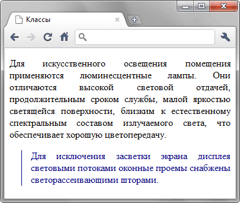

Классы
Классы применяют, когда необходимо определить стиль для одного или нескольких элементов веб-страницы. Элементы при этом могут быть разными, но иметь частично или полностью похожие элементы оформления. В коде HTML имя класса определяется через атрибут class.
Синтаксис
E.<Имя класса> { Описание правил стиля }
.<Имя класса> { Описание правил стиля }Здесь E — обозначает любой элемент. Имена классов должны начинаться с латинского символа и могут содержать в себе символ дефиса (-) и подчеркивания (_). Использование русских букв в именах классов недопустимо. Чтобы указать в коде HTML, что элемент используется с определённым классом, к тегу добавляется атрибут class.
Пример
<!DOCTYPE html>
<html>
<head>
<meta charset="utf-8">
<title>Классы</title>
<style>
p { /* Обычный абзац */
text-align: justify; /* Выравнивание текста по ширине */
}
p.cite { /* Абзац с классом cite */
color: navy; /* Синий цвет текста */
margin-left: 20px; /* Отступ слева */
border-left: 1px solid navy; /* Граница слева от текста */
padding-left: 15px; /* Расстояние от линии до текста */
}
</style>
</head>
<body>
<p>Для искусственного освещения помещения применяются люминесцентные лампы.
Они отличаются высокой световой отдачей, продолжительным сроком службы,
малой яркостью светящейся поверхности, близким к естественному спектральным
составом излучаемого света, что обеспечивает хорошую цветопередачу.</p>
<p class="cite">Для исключения засветки экрана дисплея световыми потоками
оконные проемы снабжены светорассеивающими шторами.</p>
</body>
</html>Результат примера показан на рис. 1.

Рис. 1. Вид текста, оформленного с помощью класса
Примечание
Internet Explorer до версии 7.0 понимает классы, имена которых начинаются с дефиса (-) или символа подчеркивания (_). Остальные браузеры таки имена игнорируют.
Спецификация
| Спецификация | Статус |
|---|---|
| CSS Selectors Level 3 | Рекомендация |
| CSS 2.1 | Рекомендация |
| CSS 1 | Рекомендация |
Браузеры
| Internet Explorer | Chrome | Opera | Safari | Firefox | |
| 3.5 | 7 | 1 | 3.5 | 1 | 1 |
| Android | Firefox Mobile | Opera Mobile | Safari Mobile |
| 1 | 1 | 4 | 1 |